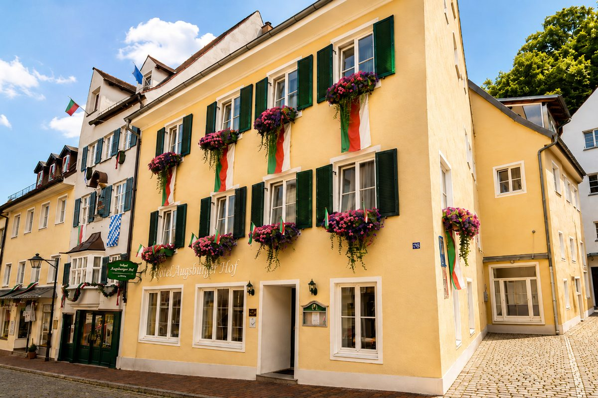
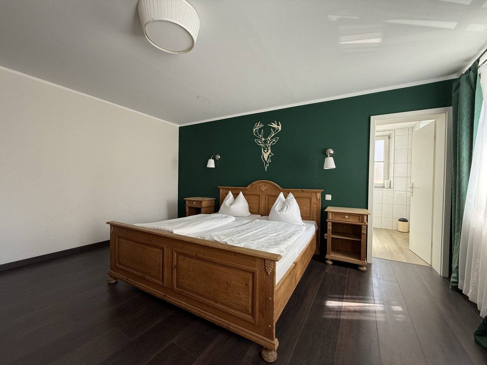
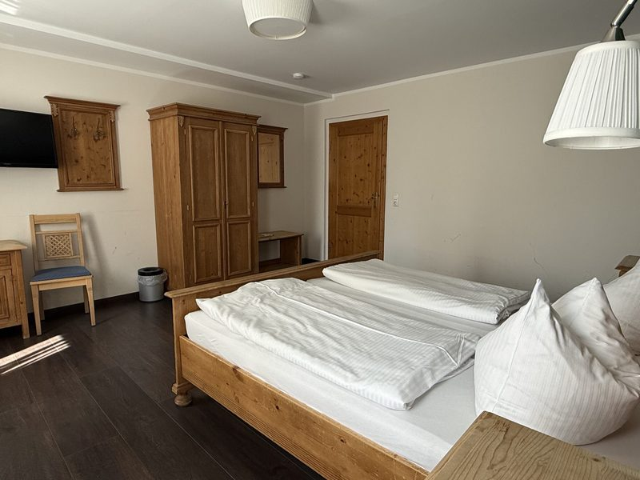
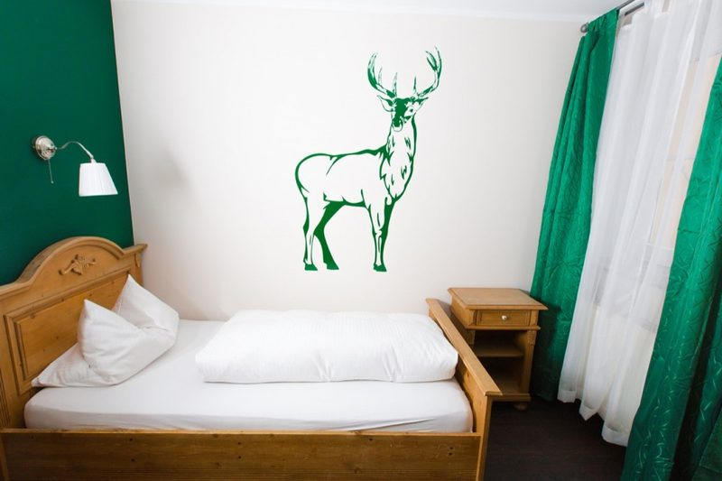
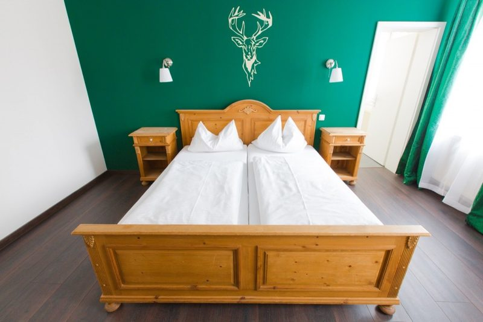
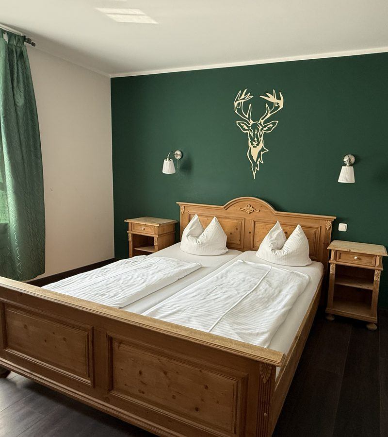

Stadthotel Garni Augsburger Hof · Altstadt von Landsberg am Lech
Mitten in der Altstadt. In einem Haus, das seit 1632 Gäste kennt.
Ein familiengeführtes Stadthotel Garni in der Schlossergasse: Zimmer im Landhausstil, ein Apartment für bis zu vier Personen und ein Frühstücksbuffet mit regionalen Produkten. Gäste bewerten das Haus auf TripAdvisor mit 4,4 von 5.
- Hauptplatz mit historischem Rathausrund 3 Minuten zu Fuß
- 200 m
- Bahnhof Landsberg (Lech)rund 9 Minuten zu Fuß
- 750 m
- Self-Check-Inanreisen, wann es Ihnen passt
- ab 15 Uhr
- Frühstücksbuffet unter der WocheSa, So und feiertags ab 7.30 Uhr
- ab 6.30 Uhr

Zimmer und Apartment
Vier Zimmerkategorien im Landhausstil – dazu ein großzügiges Apartment mit Kitchenette für bis zu vier Personen. Preise und Verfügbarkeit bestätigt das Haus auf Ihre Anfrage; diese Vorschau nennt bewusst keine Preise.
| Kategorie | Betten | Geeignet für | Aktionen |
|---|---|---|---|
| 1 Bett, 1,40 × 2,00 m | 1 Person | ||
| Doppelbett, 1,80 × 2,00 m | 1–2 Personen | ||
| 2 Betten, je 1,00 × 2,00 m | 2 Personen | ||
| 1,80 × 2,00 m + Etagenbett | bis 4 Personen |
Check-in ab 15 Uhr (Self-Check-In), Early Check-in gegen Aufpreis. Check-out unter der Woche bis 10 Uhr, am Wochenende bis 10.30 Uhr. Das Apartment mit Kitchenette für bis zu vier Personen gibt es auf Anfrage.
Ankommen, parken, zu Fuß weiter
Die Altstadt von Landsberg gehört den Fußgängern – Ihr Auto parkt trotzdem gleich in der Nähe. Direkt am Hotel gibt es Stellplätze nach Verfügbarkeit, zwei Parkgaragen liegen wenige Gehminuten entfernt.
| Parkmöglichkeit | Entfernung | Gebühr |
|---|---|---|
| Parkplätze direkt am Hotel (nach Verfügbarkeit) | am Haus | 10,00 € pro Tag |
| Parkgarage Schlossberg, Ausgang „Stadttheater“ | ca. 150 m | max. 7,00 € pro Tag |
| Parkgarage Lechstraße, Ausgang „Färbertor“ | ca. 300 m | max. 7,00 € pro Tag |
| Parkplatz Waitzinger Wiese | ca. 850 m | max. 2,30 € pro Tag |
| Parkplatz am Schlüsselanger (Bossewiese) | ca. 1,2 km | kostenfrei |
Angaben laut Haus (Stand November 2026); die aktuellen Gebühren veröffentlicht die Stadt Landsberg am Lech.
Öffentliche Parkplätze in der Innenstadt sind von 0 bis 9 Uhr gebührenfrei, sonntags bis 12 Uhr. Tagsüber gilt eine Höchstparkdauer von 2 Stunden (0,60 € je 20 Minuten).
Mit dem Fahrrad? Der Augsburger Hof ist zertifizierter Bett+Bike-Gastbetrieb: Fahrräder stellen Sie kostenfrei am oder im Hotel ab, ein absperrbarer Unterstellplatz ist vorhanden.
Motorräder parken kostenfrei am Spitalplatz (ca. 150 m). Wohnmobile stehen auf der Waitzinger Wiese für höchstens 10,00 € pro Tag.

Frühstück ab 6.30 Uhr, Zimmer im Landhausstil
Von Montag bis Freitag steht das Frühstücksbuffet von 6.30 bis 9.30 Uhr bereit, am Wochenende und an Feiertagen von 7.30 bis 10.30 Uhr – reichhaltig und überwiegend mit regionalen Produkten von ortsansässigen Partnern.
Angereist wird, wie es Ihnen passt: Der Augsburger Hof ist ein Self-Check-In-Hotel. Early Check-in gegen Aufpreis und Gepäckabgabe nach Absprache sind möglich.
- Self-Check-In ab 15 Uhr, Check-out bis 10 Uhr (Wochenende 10.30 Uhr)
- Absperrbarer Fahrrad-Unterstellplatz, zertifizierter Bett+Bike-Betrieb
- Apartment mit Kitchenette für bis zu 4 Personen
- Haustiere nach vorheriger Absprache willkommen
- Parkplätze direkt am Hotel nach Verfügbarkeit




Ein Haus mit Geschichte – seit 1632
Das Gebäude des Augsburger Hofs wurde 1632 erstmals urkundlich erwähnt und diente ursprünglich als Wohn- und Arbeitsstätte eines Landsberger Weißgerbers. Nach einer barocken Umgestaltung wurde aus dem Gerberanwesen eine Kaffeestube und schließlich eine Gastwirtschaft – seit der Mitte des 19. Jahrhunderts werden hier Gäste bewirtet.
Heute führt Christian Karner das familiengeführte Stadthotel Garni und verbindet die fast 400-jährige Geschichte des Hauses mit unkomplizierter, zeitgemäßer Gastfreundschaft – vom Self-Check-In bis zum Frühstück mit Produkten ortsansässiger Partner.
Gäste bewerten das Haus auf TripAdvisor mit 4,4 von 5 (115 Bewertungen, Platz 2 von 4 Hotels in Landsberg am Lech) und bei Google mit rund 4,5 von 5.
Gut zu wissen und Anreise
- Check-in
- ab 15 Uhr, Self-Check-In; Early Check-in gegen Aufpreis
- Check-out
- Mo–Fr bis 10 Uhr, Sa/So bis 10.30 Uhr
- Frühstück
- Mo–Fr 6.30–9.30 Uhr; Sa, So und feiertags 7.30–10.30 Uhr
- Gepäck
- Abgabe nach Absprache möglich
- Haustiere
- nach vorheriger Absprache willkommen
Mit dem Zug
Von München mit Umstieg in Kaufering bis Landsberg (Lech). Vom Bahnhof sind es rund 750 Meter zu Fuß über den Lech in die Altstadt – etwa 9 Minuten.
Mit dem Auto
Über die A96 München–Lindau bis Ausfahrt Landsberg, dann in Richtung Altstadt. Stellplätze am Hotel nach Verfügbarkeit, Parkgaragen in der Nähe – siehe Abschnitt Parken.
Adresse
Stadthotel Garni Augsburger HofSchlossergasse 378, 86899 Landsberg am Lech
+49 8191 969596 · info@augsburger-hof.com
Die Karte wird erst nach dem Klick von OpenStreetMap geladen.